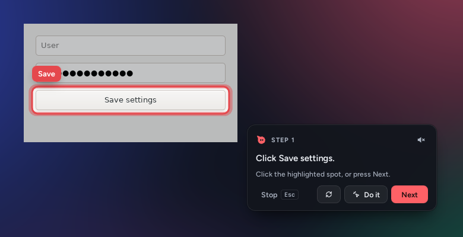
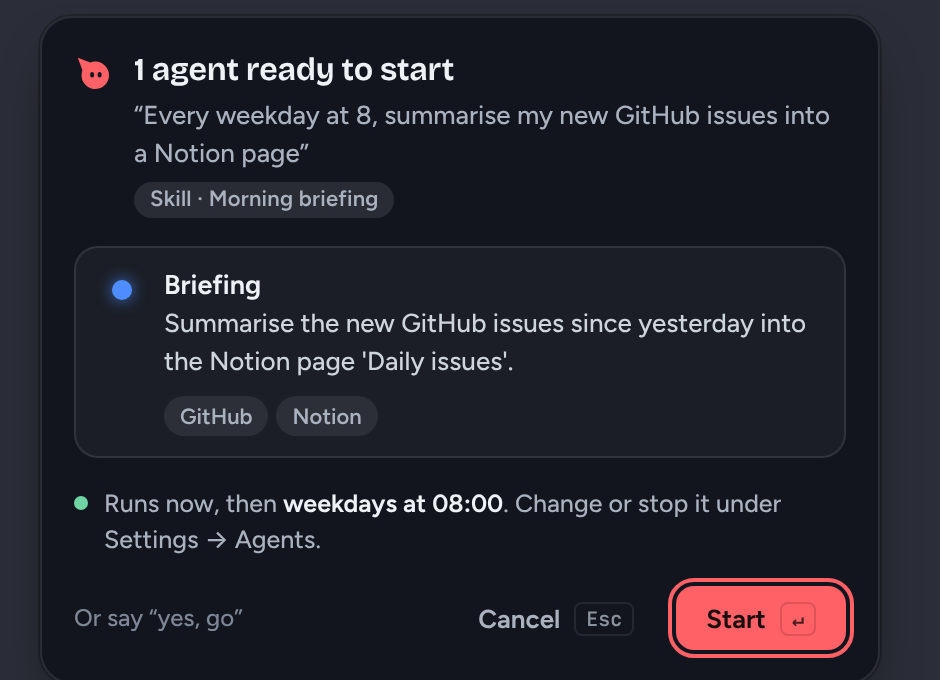
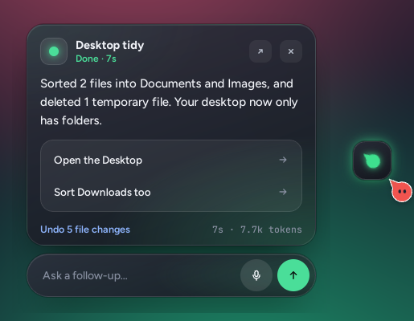

Riding along
Follows your pointer, blinks now and then, and steps aside for fullscreen apps.
Open source · macOS, Windows, Linux
Ask out loud and Helpy looks at the app in front of you, points at the answer, and walks you through it a step at a time. Say a task and agents do it in the background while you keep working.
Rather keep it out of the way? It can live in the notch.
62% of 200 GB used
A pretend app, so you can see it work. In Helpy this happens on your real apps, with a fresh screenshot of the screen under your cursor.
The cursor buddy
Pip rides beside your pointer on every monitor and never blocks a click. Its face tells you what Helpy is doing, so you never have to switch to a chat window to find out. Hover a card to see your Pip do it too.
Follows your pointer, blinks now and then, and steps aside for fullscreen apps.
A ring pulses while you hold the hotkey and talk, with your words beside it.
Dots while it reads your screen and works out the answer.
Its mouth moves as it reads the answer aloud, starting before the answer is even finished.
Or in the notch
Beside the cursor, Pip rides along everywhere. In the notch, Helpy hides behind the top of your MacBook's screen until you hover it or it has something to show: it listens, answers and tells you what its agents are doing. On a screen without a notch it's a slim black strip, on any edge and any spot along it you choose.
Go on, switch it: Pip moves home on this page too.
What it does
Most AI help lives in a chat window you have to switch to. Helpy answers on top of the app in front of you, with marks you can follow.
Ask "how do I turn on dark mode?" and Helpy highlights the real control, one step at a time. Click it, or press Next, and it takes a fresh screenshot to check before showing the next step.
Highlights snap onto the actual button through your computer's accessibility layer. "Do it" clicks it for you after you confirm.
Stuck on a diagram, a chart or a maths question? Helpy draws lines, shapes and curves in any size and direction, writes short labels, drops in a reference picture or a chart, and Pip traces along as it draws, all on a click-through layer.
Press Alt + Shift + C and the screen freezes. Draw around anything to explain it, label its parts, copy its text, translate it, or hand it to an agent.
Hold to talk or press to start and stop. Speech recognition can run on your computer with Whisper, or through OpenAI or Deepgram. Answers are read aloud as they stream, in a system, Piper or OpenAI voice. Esc stops it all.
Background agents
"Research standing desks under £400." Helpy plans one to five agents and shows you a plan card first. Press Start and a copy of the buddy peels off your cursor and flies to the screen edge, where it becomes the agent's chip.
“Research standing desks under £400 and compare them”
From the real app
Screenshots from the Linux build with a test model. On macOS and Windows 11 the cards also blur what's behind them.



You stay in charge
Helpy acts on your computer, so the guard rails are built in rather than asked for nicely.
The tour